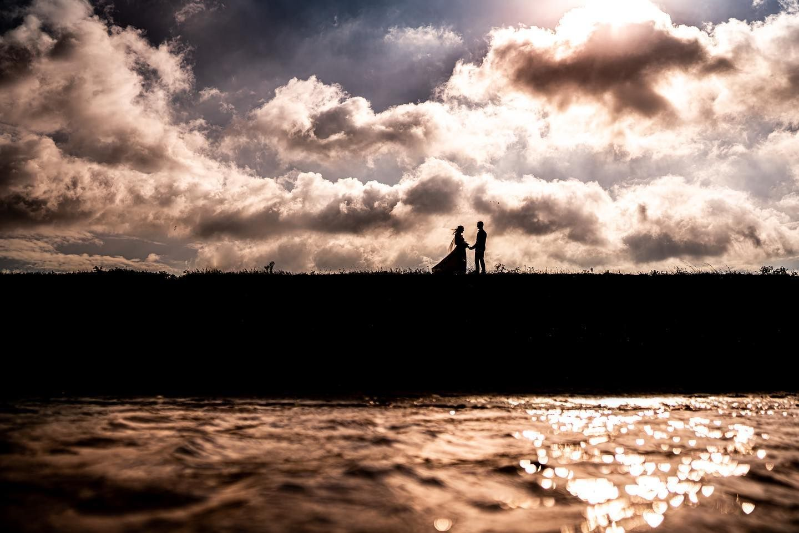
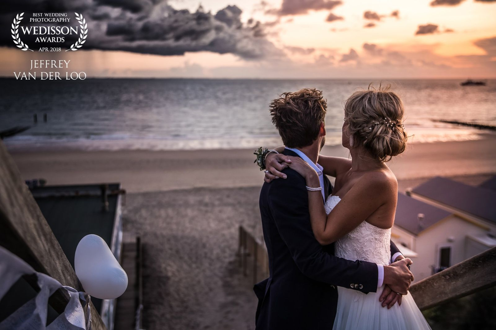
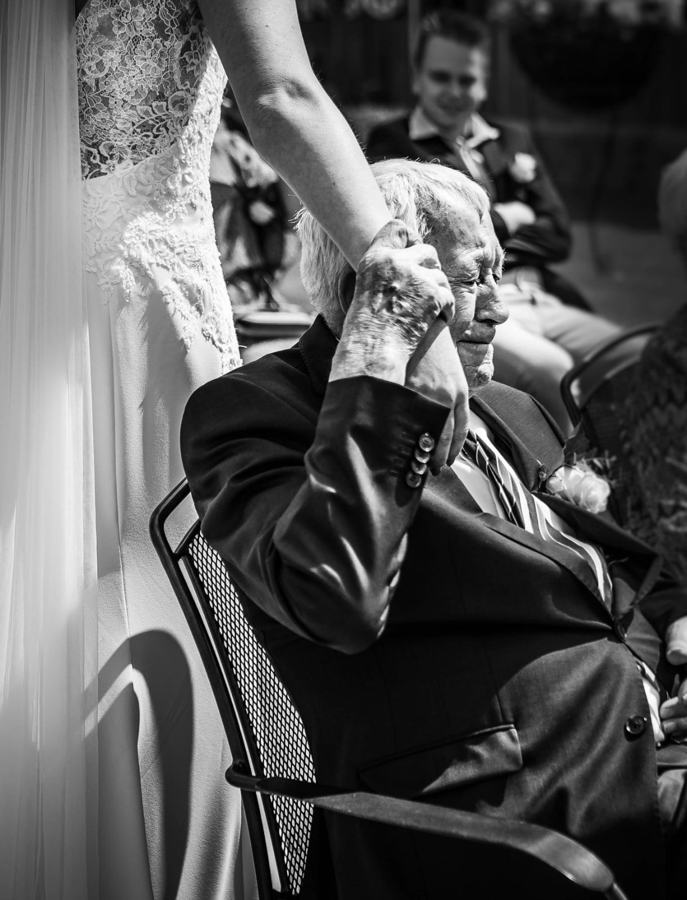
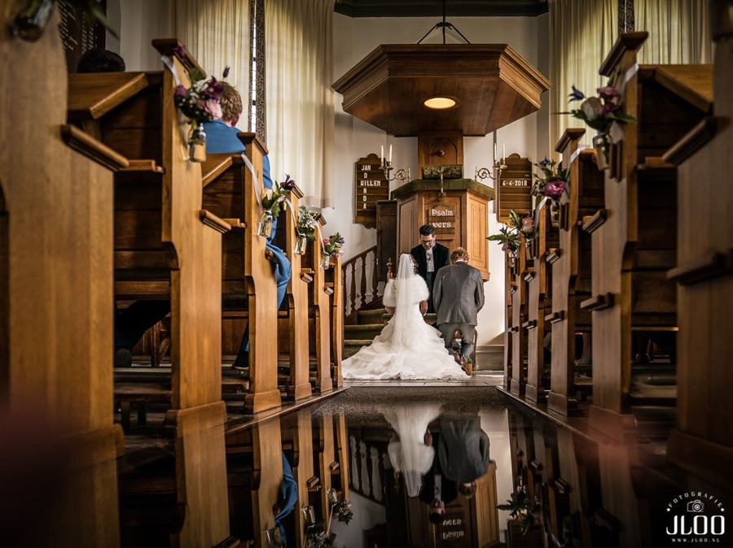
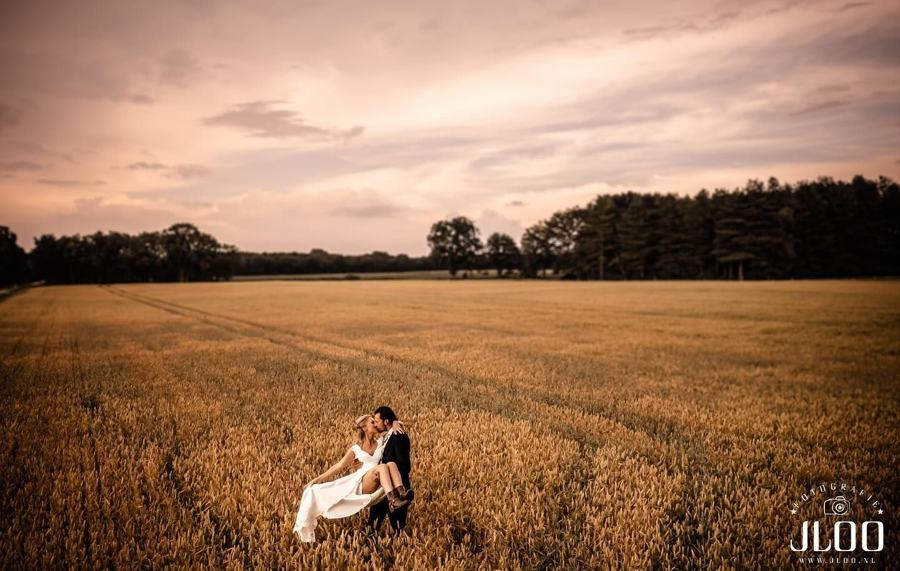
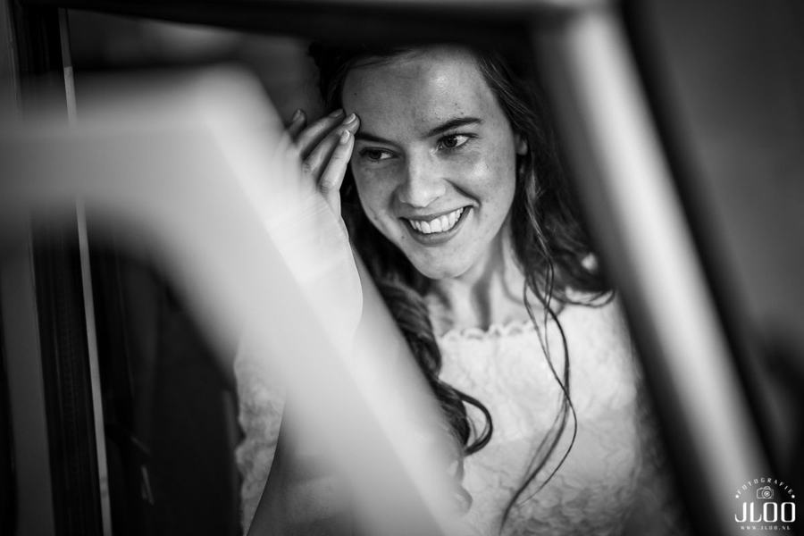
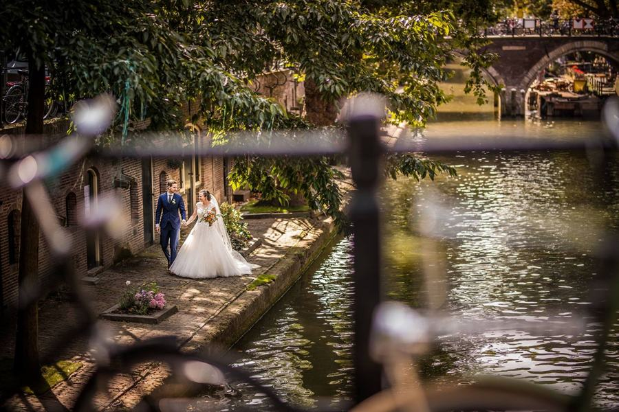
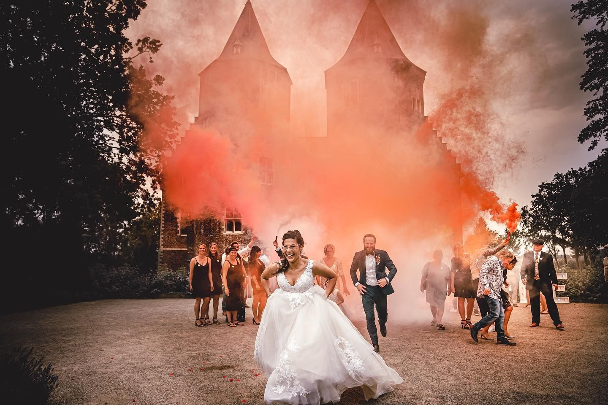
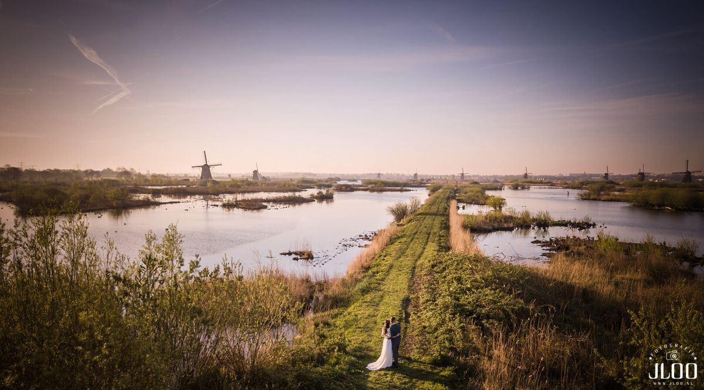

StoryBruiloften
Van de eerste blik tot de laatste dans.






Een reportage, geen losse plaatjes.
Elke bruiloft heeft een eigen verhaal. We vertellen het van begin tot eind, met de grote momenten en de kleine details.


